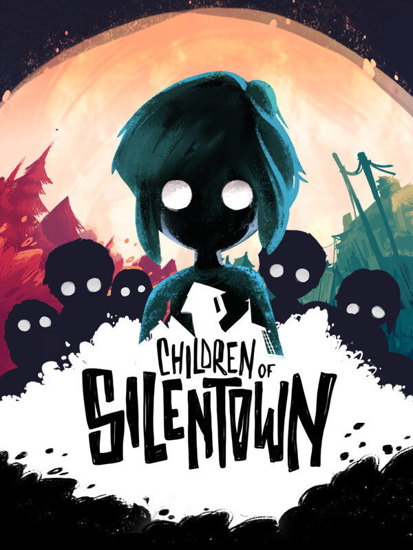

Children of Silentown
Children of Silentown
Details
|  | |
| Playtime | Not Played |
| Last Activity | Never |
| Added | 2023-09-30 23:56:07 |
| Modified | 2025-10-02 10:10:32 |
| Completion Status | Not Played |
| Library | Steam |
| Source | Steam |
| Platform | PC (Windows) |
| Release Date | 2023-01-11 |
| Community Score | 65 |
| Critic Score | |
| User Score | |
| Genre | Adventure Indie Point-and-click Puzzle |
| Developer | Elf Games Luna2 Studio |
| Publisher | Daedalic Entertainment |
| Feature | Single Player |
| Links | Steam Official Website GOG Twitch Epic Discord YouTube Nintendo Playstation |
| Tag | 2D Adventure Atmospheric Beautiful Cartoony Colorful Dark Female Protagonist Hand-drawn Horror Indie Multiple Endings Mystery Point & Click Psychological Horror Puzzle Singleplayer Story Rich Stylized Surreal |
Description
During the day the forest is calm and peaceful.
It is during the night that you hear the roars...
...of monsters.

Accompany Lucy and her friends in this grim, beautifully hand-drawn adventure game by the creators of Little Briar Rose, in collaboration with studio Luna2.
Lucy is afraid of the forest, just like any other child: every night, the echoing roars rob her of her sleep. Not even her dreams are a safe place where she could play.
People disappearing is nothing uncommon in the village, but this time, Lucy is old enough to investigate on her own. Or so she thinks.

Children of Silentown is a point & click adventure game telling a mysterious and endearing story. Explore the town and its dangerous surroundings, meet its quirky inhabitants, solve puzzles and master minigames.
Accompany Lucy on her adventure to get to the bottom of what is haunting the strange Silentown... if you dare.

- Explore Silentown in search of hints, but beware: do not enter the forest.
- A unique, unsettling 2D art style fitting for a mysterious, dark tale.
- Music plays a crucial role, and learning how to sing will help Lucy in times of need.
- Combine items to obtain widely unexpected results!
- Many quirky characters (and animals!) to interact with. Be nice to them before they disappear.
- Play minigames with the other children of the village!
- A very mean cat, programmed to mess with Lucy at any given chance.
- Curious, original puzzles: use a leash and a pair of shears to break into your mother’s best friend’s house, all in order to steal… a flower?!